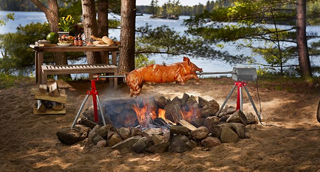

Whole Pig Roast

Whole Pig Roast Recipe
Would you like to please Odin and all your fellow brother and sisters in Valhalla? Then look no further here is where Odin himself gets his Recipe's.
Ingredients
- 1 small (15- to 20-pound) pig
- 20 Garlic cloves, peeled
- Half a Cup of neutral oil
- 1 small Potato
- 1 small Apple
- 1 lavish bunch each fresh rosemary, sage and bay leaves, for garnish
Instructions
- Heat oven to 300 degrees. Prepare the pig: Wash it, including the cavity, under cold running water, and towel-dry thoroughly, the way you would dry a small child after a bath — ears, armpits, chest cavity, face, legs, backs of knees.
- Sometimes there are imperfections remaining after the slaughtering and processing of the animal. Use dish towels or sturdy paper towels to rub away any dark spots on the ears, any little bit of remaining bristles around the mouth. Like that yellow, papery flaking skin you sometimes find on chickens, which can be peeled off to reveal tender, fresh skin underneath, a similar bit of crud can remain on pigs chins and under their belly flaps. Clean this little cutie as if you were detailing your car! The purple U.S.D.A. stamp, however, is indelible. But not inedible.
- Bard the pig with all 20 garlic cloves, making deep incisions all over with a thin filleting knife and shoving the cloves into each pocket; include the cheeks and the neck and the rump and the thighs and the loin down the back and the front shoulders, all areas of the small creature that have enough flesh to be able to receive a clove of garlic. (Sometimes I find I have to slice the larger cloves of garlic in half to get them to slide into the incision.)
- Rub the entire pig in oil exactly as you would apply suntan oil to a sunbathing goddess of another era, when people still were ignorant of the harmful effects of the sun. Massage and rub and get the whole creature slick and glistening. I do this directly in a very large roasting pan.
- Wash and dry your hands. Take large pinches of kosher salt, and raising your arm high above the pig, rain down the salt in an even, light dusting all over. You can start with the pig on its back and get the cavity and the crotch, and then turn it over and get the back and the head and flanks. Or vice versa. But in the end, the whole animal is salted evenly and lightly, snout to tail.
- Arrange the pig in the roasting pan, spine up, rear legs tucked under, with feet pointing toward its ears and its two front legs out ahead in front. Sometimes the pig needs a sharp, sturdy, confident chiropractic crack on its arching spine, just to settle it in comfortably to the roasting pan, so it won’t list to one side or topple over.
- Put the potato deep into its mouth, and place in the oven, on the bottom rack, and roast slowly for about 4 to 5 hours, depending on the size of your pig. (Plan 15 minutes of roasting time per pound of pig; if you have a 20-pounder, then you’d need about 5 hours total cooking time.) Add a little water to the roasting pan along the way if you see the juices are in danger of scorching, and loosely tent the animal with aluminum foil in vulnerable spots — ears, snout, arc of back — if you see them burning. For the last half-hour, raise the oven temperature to 450 degrees, and cook until the skin gets crisp and even blistered, checking every 10 minutes.
- Tap on it with your knuckle to hear a kind of hollow sound, letting you know the skin has inflated and separated from the interior flesh; observe splitting of the skin at knuckles — all good signs the pig is done. Or use a meat thermometer inserted deep in the neck; the pig is ready at 160 degrees. Let rest 45 minutes before serving.
- Remove the potato, and replace it with the apple. Transfer the pig to a large platter; nestle big bouquets of herbs around the pig as garnish. Save pan juices, and use for napping over the pulled meat when serving.